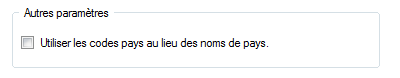

|
Cliquez sur le bouton Réglages, situé sur la barre des modules. |
 |
|
|  |
Pour ceux qui sont habitués à travailler avec le code pays, cochez la case "Utiliser les codes pays". Le HUB utilisera, alors, les codes pays au lieu des noms. |